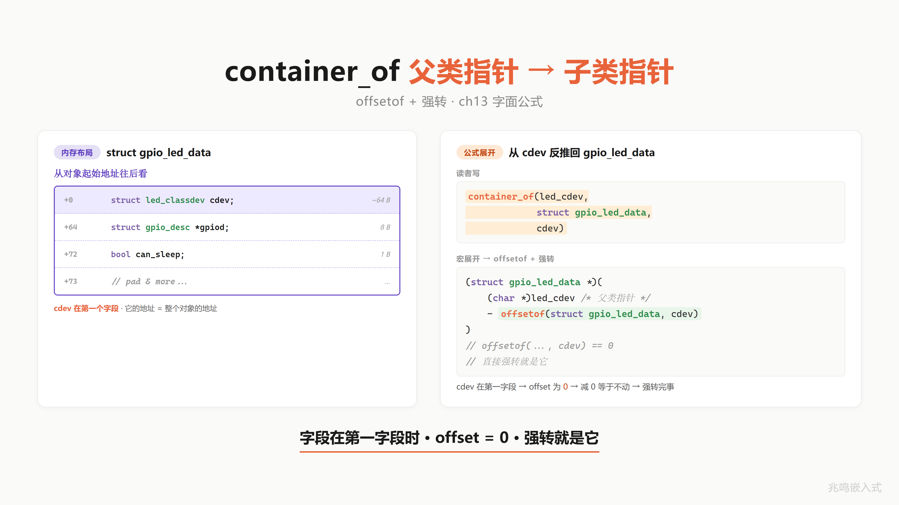
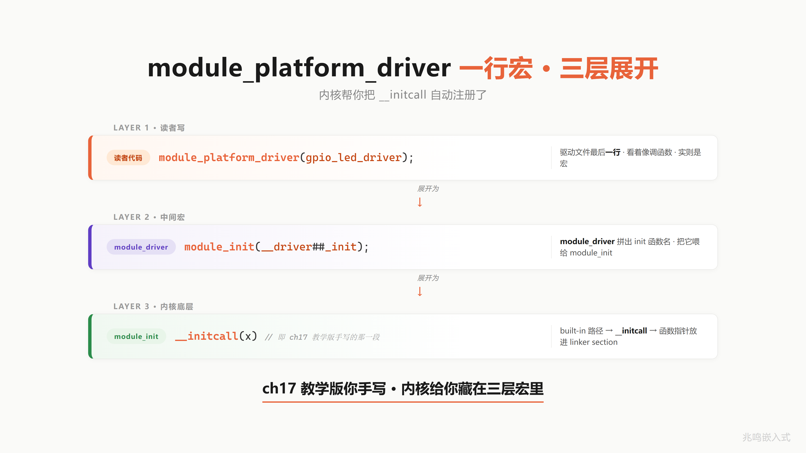

第 20 章 · Linux 实战 · 写一个自己的内核驱动
上一章 ch19 在 Zephyr 里看到前 18 章的抽象在 MCU 量级 RTOS 里的字节级实现。这一章去 Linux 6.6 内核现场。Linux 比 Zephyr 大三个数量级，千万行 vs 几十万行，但 OOP 抽象是同一套：struct led_classdev 是父类，leds-gpio.c 是子类，container_of 反推子类，module_platform_driver 一行宏完成 ch17 的 initcall 注册。
整章只读 4 个文件就能把这套抽象走完：
include/linux/leds.hdrivers/leds/led-class.cdrivers/leds/led-core.cdrivers/leds/leds-gpio.c
这一章末尾会亲手写一个内核驱动模块 leds-status.c，跑在 Raspberry Pi 4B 主线 Linux 6.6 上，/sys/class/leds/status-led/brightness 由读者自己创造。我推荐先跑这一段，动手感最强。代码不长，50 行，跑通之后从用户态 echo 1 > /sys/class/leds/status-led/brightness 一路下到寄存器，所有路径前 18 章都已经见过。
20.1 led_classdev 是父类
打开 include/linux/leds.h，往下翻到 struct led_classdev：
struct led_classdev {
const char *name;
unsigned int brightness;
unsigned int max_brightness;
unsigned int color;
int flags;
void (*brightness_set)(struct led_classdev *led_cdev,
enum led_brightness brightness);
int (*brightness_set_blocking)(struct led_classdev *led_cdev,
enum led_brightness brightness);
enum led_brightness (*brightness_get)(struct led_classdev *led_cdev);
int (*blink_set)(struct led_classdev *led_cdev,
unsigned long *delay_on, unsigned long *delay_off);
};
源码：include/linux/leds.h·permalink https://github.com/torvalds/linux/blob/v6.6/include/linux/leds.h
这就是父类。前面是公共字段，name / brightness / max_brightness / color / flags，所有 LED 通用。后面是函数指针，brightness_set / brightness_set_blocking / brightness_get / blink_set，子类挂哪个，父类就 dispatch 到哪个。
把它和 ch10 / ch11 的两种风格摆在一起对照：
| 维度 | ch11 风格·瘦 me + 共享 ops 表 | Linux 风格·胖 me + 函数指针内嵌 |
|---|---|---|
| 父类字段布局 | 公共字段 + 一个 const struct ops *ops 指针 | 公共字段 + 函数指针字段全部内嵌 |
| ops 表 | 抽成独立 struct·一份 static const struct ops | 没有独立 ops 表·函数指针直接是父类字段 |
| 子类挂方法 | 子类自己做一份 static const struct ops 然后 me->ops = &xxx_ops; | 一行 led->cdev.brightness_set = my_set; |
| 多实例 RAM | N 个实例共享一份 ops 表·N 越大越省 | 每个实例自己一份函数指针·实例多就费 RAM |
| 适用场景 | 同型号多实例·方法表稳定·实例数大 | 实例数少·子类按需挂不同方法·灵活性优先 |
| 内核里代表 | file_operations / inode_operations / net_device_ops | led_classdev / 大部分 device class |
ch10 推过的教学版 me 结构体，公共字段在前，函数指针在后。ch11 把那个函数指针抽到独立 ops 表 struct 里，让多个实例共享一份方法表，省 RAM。Linux 走的是另一条路：函数指针直接内嵌到父类，不抽 ops 表 struct。
这是有意为之。Linux 内核的 LED 不像同一型号 MCU 上的几百个实例，每块板上 LED 数量有限，几个十几个，内嵌函数指针那点 RAM 不心疼。换来的好处是子类初始化简单，led->cdev.brightness_set = my_set; 一行就挂上，不用维护一个 static const ops 表。
把这种风格记一笔：函数指针直接进父类的“胖 me“风格，和 ch11 的“瘦 me + 共享 ops 表“风格是 OOP-in-C 的两种正交选项，按场景挑。
什么时候挑哪个，有一条经验：实例数大、方法多、方法表稳定，选 ops 表风格（一份 ops 表，N 个实例共享，N 越大越省）；实例数少、子类经常按需挂不同方法、灵活性优先，选内嵌函数指针风格（每个实例自己一份，初始化简单，不用维护 static const ops 表的命名）。Linux LED 选后者，因为板上 LED 撑死十几颗，不在乎那点函数指针开销，换来子类作者写代码时一行 led->cdev.brightness_set = my_set; 就完事，心智负担轻。
但 Linux 内核里两种风格都有。比如 struct file_operations、struct inode_operations、struct net_device_ops 都是独立的 ops 表，因为文件系统和网络栈实例可能上千上万，每个实例少 200 字节函数指针就是省内存。两种风格混用，内核作者按场景挑。
不是 Linux 模仿 OOP。是 Linux 用 C 写 OOP，写了 30 多年。
20.2 brightness_set 是函数指针 dispatch
打开 drivers/leds/led-core.c，找 __led_set_brightness：
static int __led_set_brightness(struct led_classdev *led_cdev,
unsigned int value)
{
if (!led_cdev->brightness_set)
return -ENOTSUPP;
led_cdev->brightness_set(led_cdev, value);
return 0;
}
源码：drivers/leds/led-core.c·permalink https://github.com/torvalds/linux/blob/v6.6/drivers/leds/led-core.c
5 行。父类 dispatch 到子类虚函数，没 magic。第一行检查子类有没有挂 brightness_set，没挂返回 -ENOTSUPP，让上层走 brightness_set_blocking 兜底。第二行直接通过函数指针调用子类实现。
这就是 ch11 多态的字面实现。led_cdev 是父类指针，led_cdev->brightness_set 是父类里的函数指针字段，指向子类挂上去的具体函数。从内存角度看，__led_set_brightness 拿到一个 struct led_classdev *，偏移到 brightness_set 字段，读出函数指针，间接调用。一条 ARM blr 指令的事。
ch10 手算过这一步的反汇编。父类指针存在 x0，ldr x9, [x0, #0x18] 把 brightness_set 字段的函数指针读到 x9，blr x9 跳转，一共两条 ARM 指令完成一次“虚函数 dispatch“。现代乱序 CPU 上有分支预测器，间接跳转命中时 0 周期，没命中时 10 几个周期。和 C++ 虚函数的 vtable 机制开销是同一个量级，因为 vtable 本质也是这一套，只是 C++ 编译器替你藏起来了，C 写的话你自己显式写。
整个 Linux LED subsystem 的多态机制，5 行讲完。父类只负责 dispatch，具体亮不亮、亮多少、怎么亮，全部交给子类。子类换一个，dispatch 逻辑不动。这就是 ch11 多态在内核里和教科书写法一一对应。
20.3 leds-gpio.c 是子类
到此父类讲完了。子类长什么样，打开 drivers/leds/leds-gpio.c：
struct gpio_led_data {
struct led_classdev cdev;
struct gpio_desc *gpiod;
u8 can_sleep;
u8 blinking;
gpio_blink_set_t platform_gpio_blink_set;
};
static inline struct gpio_led_data *
cdev_to_gpio_led_data(struct led_classdev *led_cdev)
{
return container_of(led_cdev, struct gpio_led_data, cdev);
}
源码：drivers/leds/leds-gpio.c·permalink https://github.com/torvalds/linux/blob/v6.6/drivers/leds/leds-gpio.c
看第一字段。struct led_classdev cdev，父类内嵌，放第一位置，offset = 0。这是 ch12 教过的子类布局：父类放首字段，子类指针向上转型成父类指针零代价，两个地址字面相同。
布局示意图见下，从低地址到高地址依次是 struct led_classdev cdev（公共字段 + brightness_set 等函数指针，offset = 0，led_dat 子类指针和 &led_dat->cdev 父类指针字面相同）、struct gpio_desc *gpiod（子类私有）、u8 can_sleep、u8 blinking、gpio_blink_set_t platform_gpio_blink_set。因为父类在 offset 0，container_of 减去 0 等于不动，但写法保留，万一以后字段顺序改了，虚函数回调不用跟着改。

后面的 gpiod / can_sleep / blinking / platform_gpio_blink_set 是 gpio_led_data 自己的私有字段，父类不知道。这是 ch12 子类扩展。
下面这个 helper 函数 cdev_to_gpio_led_data 是 ch20 最该记住的命名约定。整个 Linux 内核到处都是 xxx_to_yyy_data 这样的小函数，读源码读到这个名字，脑子里立刻知道：父类指针 → 子类指针的反推。一行 container_of，把父类指针往回偏移一点点，拿到外层子类指针。
gpio_led_set 函数实现就用得上：
static void gpio_led_set(struct led_classdev *led_cdev,
enum led_brightness value)
{
struct gpio_led_data *led_dat = cdev_to_gpio_led_data(led_cdev);
/* ... 中间省略 blink 处理 ... */
gpiod_set_value(led_dat->gpiod, !!value);
}
第一行 cdev_to_gpio_led_data(led_cdev) 把父类指针反推回子类指针，然后 led_dat->gpiod 拿到子类私有的 GPIO 描述符，gpiod_set_value 一拍就把寄存器写了。这就是 ch13 container_of 和教科书写法一一对应。
到这里，一个 LED 子类长什么样，清晰了：
- 父类做第一字段·向上转型零代价
- 子类私有字段紧接在后
- 一个
xxx_to_yyy_datahelper·里面一行container_of把父类指针反推回子类 - 虚函数实现的第一行就调这个 helper·拿子类指针·然后操作私有字段
这套写法，drivers/leds 里 92 个驱动，全部如此。
20.4 container_of 在 Linux 主线
ch13 手写过一个 container_of，三行：
#define container_of(ptr, type, member) \
((type *)((char *)(ptr) - offsetof(type, member)))
Linux 主线的版本多了几行，在 include/linux/container_of.h：
#define container_of(ptr, type, member) ({ \
void *__mptr = (void *)(ptr); \
static_assert(__same_type(*(ptr), ((type *)0)->member) || \
__same_type(*(ptr), void), \
"pointer type mismatch in container_of()"); \
((type *)(__mptr - offsetof(type, member))); })
源码：include/linux/container_of.h·permalink https://github.com/torvalds/linux/blob/v6.6/include/linux/container_of.h
核心还是 ch13 那一行 __mptr - offsetof(type, member)，偏移取减，拿到外层结构体指针。
多出来的两层是类型安全检查。static_assert + __same_type 是 GCC 内建，编译期对比 *ptr 的类型和 ((type *)0)->member 的类型，不一致直接编译报错。教学版 ch13 没讲这层，借这里展开一下：
__same_type(a, b) 是 GCC 的 __builtin_types_compatible_p 包装，两边类型一致返回 1，不一致返回 0。static_assert 编译期断言，条件假就在编译期报错。整个意思是：container_of(led_cdev, struct gpio_led_data, cdev) 这一行，编译期会检查 led_cdev 的类型确实是 struct led_classdev *，和 gpio_led_data.cdev 的类型一致，不一致编译就挂。
这层检查不影响运行时，完全编译期，零代价。教学版不带，内核版加上，防止有人写 container_of(some_other_ptr, struct gpio_led_data, cdev) 这种类型不匹配的代码。
数据点：drivers/leds 全树 92 个驱动用 container_of，共 175 处。内核里 container_of 不是教学杜撰，和教科书写法一一对应。读到任何一个 _to_ 结尾的 helper 函数，里面 9 成是这一行。
把视野放宽到全 drivers/ 目录，container_of 用法是几万次的级别。文件系统层 VFS 用它从 struct file * 反推私有数据，网络栈用它从 struct sk_buff * 反推协议私有结构，设备模型用它从 struct device * 反推总线设备，中断框架用它从 struct irq_data * 反推中断控制器私有结构。父类 + 子类 + container_of 反推这套机制，是 Linux 内核的字面骨架，没有它内核根本写不下去。
ch13 教学版那条三行公式，不是为了应试编出来的，是 Linux 内核 30 多年来写驱动写出来的真实工程模式。学到这里，你拿任何一份内核驱动源码，先扫一眼有没有 container_of，有就找子类布局，定位父类字段，串起来调用链，读源码的速度直接快一个量级。
20.5 platform_driver 是 ch17 initcall 升级版
ch17 手写过 __initcall 表，把所有驱动的 init 函数收集到一个 section，内核启动时遍历调用。Linux 主线把这个动作藏在三层宏里。打开 drivers/leds/leds-gpio.c 末尾：
static struct platform_driver gpio_led_driver = {
.probe = gpio_led_probe,
.shutdown = gpio_led_shutdown,
.driver = {
.name = "leds-gpio",
.of_match_table = of_gpio_leds_match,
},
};
module_platform_driver(gpio_led_driver);
最后一行 module_platform_driver(gpio_led_driver) 一行完事。展开三层，见示意图。第一层在 include/linux/platform_device.h，把 module_platform_driver(...) 替换成 module_driver(..., platform_driver_register, platform_driver_unregister)。第二层在 include/linux/device/driver.h，把 module_driver(...) 替换成 __init init 函数 + module_init + __exit exit 函数 + module_exit 这套样板。第三层在 include/linux/module.h，把 module_init(x) 替换成 __initcall(x)，这就是 ch17 教学版的 init 表机制。

逐层 #define 替换，一层一层往下展。
第一层在 include/linux/platform_device.h：
#define module_platform_driver(__platform_driver) \
module_driver(__platform_driver, platform_driver_register, \
platform_driver_unregister)
第二层在 include/linux/device/driver.h：
#define module_driver(__driver, __register, __unregister, ...) \
static int __init __driver##_init(void) \
{ return __register(&(__driver) , ##__VA_ARGS__); } \
module_init(__driver##_init); \
static void __exit __driver##_exit(void) \
{ __unregister(&(__driver) , ##__VA_ARGS__); } \
module_exit(__driver##_exit);
第三层，module_init 在 built-in 路径，include/linux/module.h：
#define module_init(x) __initcall(x);
三层展开下来，module_platform_driver(gpio_led_driver) 等价于：
static int __init gpio_led_driver_init(void) {
return platform_driver_register(&gpio_led_driver);
}
__initcall(gpio_led_driver_init);
ch17 教学版手写的 __initcall 表，内核把这个动作藏在三层宏里。读者写自己的 leds-status.c 也是一行 module_platform_driver(...) 完事，内核帮把 __initcall 注册了。
源码：
include/linux/platform_device.h·permalinkhttps://github.com/torvalds/linux/blob/v6.6/include/linux/platform_device.hinclude/linux/device/driver.h·permalinkhttps://github.com/torvalds/linux/blob/v6.6/include/linux/device/driver.hinclude/linux/module.h·permalinkhttps://github.com/torvalds/linux/blob/v6.6/include/linux/module.h
为什么要绕三层宏，原因是同一段样板代码（init 函数 + exit 函数 + 注册 + 取消注册）在内核里重复了上千次。每个 platform_driver 都长这样，每个 i2c_driver 也长这样，每个 spi_driver 还是长这样。把样板包进 module_xxx_driver 一行宏，1500 多个驱动，每个驱动都省下 10 行模板，总共省下一万多行机械代码，而且不会写错。
ch17 手写 __initcall 时，宏只有一层，因为教学场景只关心一个驱动。Linux 主线把这层宏扩展到三层，是工程层面的取舍：层数多，调试看反汇编时绕一下，但写驱动的人少打 10 行字，而且如果以后改 init 路径（比如 deferred probe），只改宏定义一处，所有驱动跟着升级。
读到这里，module_platform_driver 不再是黑魔法。它就是 ch17 init 表的一行宏包装，包了一层 register / unregister，包了一层 module_init / module_exit，最后底层还是 __initcall。展开下来你都见过。
20.6 不只是 LED · I2C 温度传感器在 hwmon subsystem
还记得 ch19 § 19.6 那颗 LM75 吗，在 Zephyr 它走的是 sensor subsystem，这边主线 Linux 走的是 hwmon class。同一颗 I2C 温度芯片，两套子系统，两份对照，都验证你前 18 章学的“换驱动不改应用“。
前面 5 节都在 LED · leds-gpio.c 是 platform_driver · 走 device tree 节点匹配。读者可能想问：I2C 设备在 Linux 里怎么 OOP，写法和 platform_driver 一样吗。答案是：套路完全一样，只是父类不同，register 函数不同。这一节切到一颗业界经典 I2C 温度芯片 LM75，主线源码在 drivers/hwmon/lm75.c，几十年标杆，Linux 上千万台服务器读温度都是这条路。
20.6.1 LM75 在 dts 里
LM75 不挂 GPIO，挂 I2C bus。device tree 写法和 ch19 § 19.6.1 那段同款：
&i2c1 {
lm75: lm75@48 {
compatible = "national,lm75";
reg = <0x48>;
};
};
这段 dts 说三件事：第一，LM75 是 &i2c1 这个 I2C 控制器下的 client。第二，I2C 7-bit 地址 0x48，lm75@48 这个 unit address 和 reg = <0x48> 字面对应。第三，compatible = "national,lm75" 是匹配字符串，driver 端用它撮合。
20.6.2 i2c_driver 是 platform_driver 的 I2C 兄弟
打开 drivers/hwmon/lm75.c，往末尾翻，有这一段：
static const struct of_device_id __maybe_unused lm75_of_match[] = {
{ .compatible = "national,lm75", .data = (void *)lm75 },
{ .compatible = "national,lm75a", .data = (void *)lm75a },
{ .compatible = "national,lm75b", .data = (void *)lm75b },
{ .compatible = "ti,tmp75", .data = (void *)tmp75 },
/* ... 还有二十几行其它 compatible ... */
{ },
};
MODULE_DEVICE_TABLE(of, lm75_of_match);
static struct i2c_driver lm75_driver = {
.class = I2C_CLASS_HWMON,
.driver = {
.name = "lm75",
.of_match_table = of_match_ptr(lm75_of_match),
},
.probe = lm75_probe,
.id_table = lm75_ids,
};
module_i2c_driver(lm75_driver);
源码：drivers/hwmon/lm75.c·permalink https://github.com/torvalds/linux/blob/v6.6/drivers/hwmon/lm75.c
熟悉的味道。of_match_table 数组，一行一个 compatible，driver core 拿这张表去和 device tree 节点的 compatible 字符串对，对上了调 probe。struct i2c_driver lm75_driver 实例，四件事：所属 class，driver 名字 + match 表，probe 函数，id 表（给非 device tree 平台用，比如老式 ACPI 板子）。最后一行 module_i2c_driver(lm75_driver) 一行宏完成 init + register。
module_i2c_driver 三层宏展开和 §20.5 看到的 module_platform_driver 字面同款，只是 register 换成 i2c_add_driver，unregister 换成 i2c_del_driver，最底层还是 ch17 那个 __initcall。同款套路，换了一个总线。
20.6.3 LM75 probe 注册到 hwmon class
probe 函数 lm75_probe 长这样（drivers/hwmon/lm75.c line 572 起，裁剪到关键 5 行）：
static int lm75_probe(struct i2c_client *client)
{
struct device *dev = &client->dev;
struct lm75_data *data;
struct device *hwmon_dev;
/* ... 中间分配 data / 拿 regulator / 初始化寄存器 ... */
hwmon_dev = devm_hwmon_device_register_with_info(dev, client->name,
data, &lm75_chip_info,
NULL);
if (IS_ERR(hwmon_dev))
return PTR_ERR(hwmon_dev);
return 0;
}
关键一行 devm_hwmon_device_register_with_info(...)，把 LM75 注册到 hwmon class。这和 leds-gpio probe 里的 devm_led_classdev_register(...) 是同款动作，只是注册到的 class 不同，一个挂 /sys/class/leds/<name>/，一个挂 /sys/class/hwmon/hwmon<N>/。
hwmon 是 Linux 标准的“硬件监控“子系统，专门管温度 / 电压 / 风扇 / 电流这一类传感器。任何板上接的传感器芯片，驱动里只要 devm_hwmon_device_register_with_info 这一行，hwmon 框架帮你建好 sysfs 节点，名字按规范出，temp1_input / temp1_max / in0_input / fan1_input，全是预定义好的命名空间。
20.6.4 用户态 sysfs · /sys/class/hwmon/
板子跑起来之后，从用户态读温度，四行命令：
$ ls /sys/class/hwmon/
hwmon0 hwmon1
$ cat /sys/class/hwmon/hwmon0/name
lm75
$ cat /sys/class/hwmon/hwmon0/temp1_input
27500
hwmon0/name 告诉你这台板子上 hwmon0 这个节点是 LM75。hwmon0/temp1_input 是温度，单位毫摄氏度，27500 等于 27.5°C。换成另一颗 TMP102 芯片，路径完全一样，都是 /sys/class/hwmon/hwmonN/temp1_input，只是 name 文件里写 tmp102 不是 lm75。应用层读温度，脚本永远是 cat /sys/class/hwmon/hwmon0/temp1_input，下面挂 LM75 还是 TMP102 还是其他兼容芯片，上层完全不知道，也不需要知道。
20.6.5 同款套路·换了一个 class
回头对照，你写的 leds-status.c 和 LM75 driver 是同一套结构：
| 维度 | leds-status.c·platform_driver | lm75.c·i2c_driver |
|---|---|---|
| 总线 | platform | I2C |
| match 表 | of_device_id status_led_of_match[] | of_device_id lm75_of_match[] |
| driver 实例 | struct platform_driver status_led_driver | struct i2c_driver lm75_driver |
| 一行宏 | module_platform_driver(...) | module_i2c_driver(...) |
| probe 函数 | status_led_probe | lm75_probe |
| 注册到的 class | led class · devm_led_classdev_register | hwmon class · devm_hwmon_device_register_with_info |
| sysfs 路径 | /sys/class/leds/<name>/brightness | /sys/class/hwmon/hwmon<N>/temp1_input |
每一行都对得上。换总线，match 表 struct 和 register 函数换名字，骨架不变。换设备类型，注册到的 class 换名字，骨架不变。读者带走的不是“两个特定 API 怎么用“，是“OOP 套路一脉相承“。
drivers/ 全树几千个驱动，都是这个模板。读懂 LED + LM75，读懂的是这套结构。下次拿到一颗陌生 SPI 芯片，先翻 driver 末尾找 module_spi_driver(xxx)，往上看 of_match_table，看 probe 函数注册到哪个 class，三步走完，这颗芯片在 Linux 里的 OOP 骨架就到手了。
20.7 sysfs 是父类公开 dispatch
ch15 讲过：接口和实现分离，应用层只看接口，实现可换。Linux LED 的接口是 /sys/class/leds/<name>/brightness，一个文件，echo 1 > 就亮，echo 0 > 就灭。这个文件背后，sysfs 把它接到父类的 dispatch 函数上。
打开 drivers/leds/led-class.c，找 brightness_store：
static ssize_t brightness_store(struct device *dev,
struct device_attribute *attr, const char *buf, size_t size)
{
struct led_classdev *led_cdev = dev_get_drvdata(dev);
unsigned long state;
ssize_t ret;
/* ... 省略 mutex_lock + sysfs_disabled 检查 ... */
ret = kstrtoul(buf, 10, &state);
if (ret)
return ret;
if (state == LED_OFF)
led_trigger_remove(led_cdev);
led_set_brightness(led_cdev, state);
flush_work(&led_cdev->set_brightness_work);
return size;
}
static DEVICE_ATTR_RW(brightness);
源码：drivers/leds/led-class.c·permalink https://github.com/torvalds/linux/blob/v6.6/drivers/leds/led-class.c
echo 1 > /sys/class/leds/ACT/brightness 一句命令，内核里走完整链路：
echo 1 > → VFS/kernfs → brightness_store → led_set_brightness → __led_set_brightness → 子类 gpio_led_set → gpiod_set_value → GPIO 寄存器写
第一段 VFS / kernfs 是 Linux 文件系统层，把 echo 1 > 这个 write 系统调用转成 sysfs 的 store 回调。第二段 brightness_store 在父类文件 led-class.c 里，dev_get_drvdata 拿到关联的 led_classdev *，kstrtoul 把字符串 “1\n” 解析成数字 1。第三段调 led_set_brightness → __led_set_brightness，走到 20.2 看过的那 5 行 dispatch，一脚踩到子类的 gpio_led_set。第四段 gpiod_set_value 到 GPIO subsystem，最后 GPIO 控制器驱动写寄存器，LED 亮。
整条链路从用户态 echo 一路到寄存器，跨了 5 个文件，没有一处 magic，全部是函数指针 dispatch + container_of 反推。
ch15 讲接口稳定实现可换。这条链路是字面证据。/sys/class/leds/<name>/brightness 这个接口 15 年没变，下面的实现从 leds-gpio 到 leds-pwm 到 leds-bcm6328 再到 leds-mt6323，几十个子类来来去去，上层 echo 1 永远生效。
这里有个值得记一笔的细节：父类暴露给用户态的“接口“，不是函数签名，是文件名。/sys/class/leds/<name>/brightness 这个文件路径就是接口，echo 1 > 是接口的调用语法。这种“接口 = 文件“的设计是 UNIX 的祖传哲学，“一切皆文件”。/sys/class/... 整棵树都是 sysfs，内核把父类的 dispatch 入口绑到一个虚拟文件上，应用层（shell / 脚本 / 用户态程序）用读写文件的语法调用父类，父类 dispatch 到子类，子类操作硬件。
这套设计的好处，任何能读写文件的程序都能控 LED，不需要 link C 库，不需要懂 ioctl，不需要装 SDK。一行 shell 脚本 for i in 1 0 1 0; do echo $i > /sys/class/leds/status-led/brightness; sleep 0.5; done 就让 LED 闪。这种应用层接口的极简，背后是父类 + sysfs + 函数指针 dispatch 三层抽象联合提供的，ch15 接口契约，UNIX 文件哲学，OOP-in-C 多态，三件事在这条链路上合一。
20.8 写自己的 leds-status.c · Demo 1
到这里，所有抽象都讲完了。下面亲手写一个。文件名 leds-status.c，50 行，跑在 Raspberry Pi 4B 主线 Linux 6.6 上，跑通之后 /sys/class/leds/status-led/brightness 就是你的。
这一节我推荐先跑，动手感最强。读完前 18 章，所有抽象都见过，所有公式都推过，但都是教学版的小工程。从这一节开始，代码挂进 Linux 主线内核，和 Linus 同一棵 source tree，和上亿台设备同款 LED 框架，同一份 sysfs 接口，同一条 dispatch 链路。/sys/class/leds/ 这个目录，原本只有内核维护者能往里加东西，跑完这一节，读者自己也能。
完整代码：
// SPDX-License-Identifier: GPL-2.0
#include <linux/module.h>
#include <linux/platform_device.h>
#include <linux/leds.h>
#include <linux/gpio/consumer.h>
#include <linux/of.h>
struct status_led_data {
struct led_classdev cdev;
struct gpio_desc *gpiod;
};
static void status_led_brightness_set(struct led_classdev *led_cdev,
enum led_brightness value)
{
struct status_led_data *led =
container_of(led_cdev, struct status_led_data, cdev);
gpiod_set_value(led->gpiod, value ? 1 : 0);
}
static int status_led_probe(struct platform_device *pdev)
{
struct status_led_data *led;
int ret;
led = devm_kzalloc(&pdev->dev, sizeof(*led), GFP_KERNEL);
if (!led)
return -ENOMEM;
led->gpiod = devm_gpiod_get(&pdev->dev, NULL, GPIOD_OUT_LOW);
if (IS_ERR(led->gpiod))
return PTR_ERR(led->gpiod);
led->cdev.name = "status-led";
led->cdev.max_brightness = 1;
led->cdev.brightness_set = status_led_brightness_set;
ret = devm_led_classdev_register(&pdev->dev, &led->cdev);
return ret;
}
static const struct of_device_id status_led_of_match[] = {
{ .compatible = "status-led", },
{},
};
MODULE_DEVICE_TABLE(of, status_led_of_match);
static struct platform_driver status_led_driver = {
.probe = status_led_probe,
.driver = {
.name = "leds-status",
.of_match_table = status_led_of_match,
},
};
module_platform_driver(status_led_driver);
MODULE_AUTHOR("zhaoming-embedded");
MODULE_DESCRIPTION("Hello world LED driver for ch20");
MODULE_LICENSE("GPL");
逐段拆 5 个关键点，全部能在前 18 章找到对应。
第一，子类布局：
struct status_led_data {
struct led_classdev cdev;
struct gpio_desc *gpiod;
};
struct led_classdev cdev 在第一字段，offset = 0。子类指针向上转型成父类指针零代价，两地址字面相同。这是 ch12 教过的子类布局，和 gpio_led_data 一模一样。
第二，container_of 反推：
struct status_led_data *led =
container_of(led_cdev, struct status_led_data, cdev);
虚函数 status_led_brightness_set 收到的是父类指针 led_cdev，第一行 container_of 把它反推回子类指针，然后 led->gpiod 拿到子类私有字段。这是 ch13 容器宏的字面用法，和 cdev_to_gpio_led_data 同款。
第三，虚函数挂载：
led->cdev.brightness_set = status_led_brightness_set;
brightness_set 是父类里的函数指针字段，子类初始化时挂上自己的实现。父类后续 dispatch 到这里，走的就是你这一份。这是 ch11 多态的字面装配。
第四，向父类注册：
ret = devm_led_classdev_register(&pdev->dev, &led->cdev);
把 &led->cdev 这个父类指针交给 LED 框架，框架把它挂到全局链表，建 sysfs 节点 /sys/class/leds/status-led/，挂 brightness / max_brightness / trigger 三个文件。这是 ch15 子类向父类注册接口的字面动作。
第五，initcall 一行：
module_platform_driver(status_led_driver);
ch17 的 initcall 表，一行宏完成。展开下来等价于 __initcall(status_led_driver_init)，内核启动遍历 init 表，调到你的 status_led_driver_init，里面 platform_driver_register 把驱动登记进 driver core，driver core 遍历 device 树，按 of_match 匹配到 device tree 里 compatible = "status-led" 的节点，调你的 status_led_probe，probe 里 devm_kzalloc 分配子类实例，devm_gpiod_get 拿 GPIO，挂虚函数，向父类注册，完成。
期望输出，截图保留：
$ sudo insmod leds-status.ko
$ ls /sys/class/leds/
ACT PWR status-led <- 这是我加的
$ echo 1 | sudo tee /sys/class/leds/status-led/brightness
$ # LED 亮
$ echo 0 | sudo tee /sys/class/leds/status-led/brightness
$ # LED 灭
这里为什么用 tee 不直接重定向？tee 的作用是把 stdin 写到文件。要写 /sys 节点需要 root 权限，而 sudo echo 1 > /sys/... 中的 > 重定向是 shell 在 user 权限下做的，写文件那一步会被拒。改用管道送给 sudo tee，让 sudo 提权到写文件那一步，这是 Linux 下写 /sys 节点的标准写法。
build 和跑命令完整流程在附录 C，包括 device tree overlay 怎么写，raspberrypi-kernel-headers 怎么装，make modules 在哪个目录跑，dtoverlay 怎么加载。这一章正文不展开 build，只把代码逻辑讲透。
50 行代码，5 个关键点，全部在前 18 章见过。这就是 OOP-in-C 在 Linux 主线和教科书写法一一对应。
20.9 Demo 2 · sysfs vs libgpiod 同硬件两接口
ch15 讲接口和实现分离，实现可换，接口稳定。Linux 上同一颗 LED 实际上有两套用户态接口，互斥可换，正好印证。
第一套，sysfs：你刚写的 leds-status.c 提供的 /sys/class/leds/status-led/brightness，echo 1 > 就亮。
第二套，libgpiod：跳过 LED 框架，直接从用户态控 GPIO。30 行 C 代码：
#include <gpiod.h>
#include <unistd.h>
int main(void) {
struct gpiod_chip *chip = gpiod_chip_open_by_name("gpiochip0");
struct gpiod_line *line = gpiod_chip_get_line(chip, 17);
gpiod_line_request_output(line, "blink_demo", 0);
for (int i = 0; i < 20; i++) {
gpiod_line_set_value(line, i & 1);
usleep(200000);
}
gpiod_line_release(line);
gpiod_chip_close(chip);
return 0;
}
对比演示步骤：先 rmmod leds-status 卸载内核驱动，再用 libgpiod 拍 GPIO17，LED 闪。再 insmod leds-status.ko 加载内核驱动，此时 GPIO17 被你的内核驱动 claim 走，libgpiod 再请求会拿到 -EBUSY，只能走 /sys/class/leds/status-led/brightness。
为什么互斥，原因在 GPIO subsystem 内部。devm_gpiod_get 在你的 probe 里把 GPIO17 标记为已占用，这块状态在 GPIO 控制器驱动的全局表里，任何后来的 request 都会读到这个状态返回 -EBUSY。libgpiod 在用户态走的 char device /dev/gpiochip0 接口，底层也是同一张全局表，所以拿不到。
这两套接口本身没有谁好谁坏。sysfs 的 /sys/class/leds/<name>/brightness 适合控带语义的 LED，框架还顺手把 trigger 机制（heartbeat / disk-activity / timer）打包给你。libgpiod 适合控通用 GPIO，没有 LED 那层语义，拿来当 LED 用也行，但失去 trigger，用户态自己实现闪烁。
同一颗 LED，两种接口，完全互斥，实现可换。哪种实现接管，就走哪个接口，上层应用不需要知道下面是 sysfs 还是 libgpiod，只要选一个稳定接口写就行。这是 ch15 接口稳定实现可换的字面证据。LED 框架向上提供的 sysfs 接口已经稳定 15 年没变，你的 leds-status.c 接进来，应用层完全不用改，这就是接口契约的价值。
20.10 Demo 3 · CONTAINER_OF 现场抓
ch13 手写过 container_of 公式：container_of(ptr, type, member) = ptr - offsetof(type, member)。Demo 3 在 QEMU + gdb-multiarch 里把这条公式现场抓出来。
QEMU virt + gdb 调试路径，完整命令在附录 C 的 ch20-demo3-gdb/README.md，这里只看关键观测点：
(gdb) b status_led_brightness_set
(gdb) c
(gdb) print led_cdev
$1 = (struct led_classdev *) 0xffff80000abcd028
(gdb) print led
$2 = (struct status_led_data *) 0xffff80000abcd028
(gdb) print &led->cdev
$3 = (struct led_classdev *) 0xffff80000abcd028
三个地址，字面相同。原因：offsetof(struct status_led_data, cdev) == 0，因为 cdev 是第一字段。container_of 公式里 ptr - 0 == ptr，所以父类指针和子类指针数值相等。
把 cdev 挪到第二字段，重 build：
struct status_led_data {
struct gpio_desc *gpiod; /* 占第一字段·8 字节 */
struct led_classdev cdev; /* 第二字段·offset = 8 */
};
再到 gdb 里：
(gdb) print led_cdev
$1 = (struct led_classdev *) 0xffff80000abcd030
(gdb) print led
$2 = (struct status_led_data *) 0xffff80000abcd028
(gdb) print/d (char *)led_cdev - (char *)led
$3 = 8
差 8，正好 sizeof(struct gpio_desc *)。container_of 在虚函数第一行的反推，就是把 0xffff80000abcd030 减回 0xffff80000abcd028，拿回子类指针。ch13 那条三行公式，gdb 里亲眼看见生效。
把字段顺序换回原版（cdev 在第一字段），重 build，再到 gdb 里，三个地址又重新等同。这种“动一下字段顺序，offset 就跟着变“的实验，gdb 里来回切几次，container_of 公式在你脑子里就坐实了：父类指针不是子类指针，两者差一个 offsetof(子类, 父类字段)，能差 0 也能差 8 也能差 24，全看子类布局。
这就是 ch13 容器宏的全部秘密。Linux 内核 175 处用法，公式是同一条，只有 offset 不同。读到任何一行 container_of(...)，脑子里画一下子类布局，offset 自己算出来，就懂了。
20.11 Demo 4 · module_init 链路追踪
ch17 教学版的 initcall 表，只讲到内核启动遍历 init 段。Linux 主线还多一层 device-driver match，这层教学版没讲，这里补上。
dmesg + /proc/kallsyms + ftrace 三件套，完整命令在附录 C 的 trace_initcall.sh，这里只讲观察点：
$ sudo dmesg | grep -i 'initcall'
[ 1.234567] initcall gpio_led_driver_init+0x0/0x10 returned 0 after 87 usecs
这一行说明：内核启动遍历 initcall 表，走到 gpio_led_driver_init，这个函数就是 module_platform_driver 宏展开后的 init 函数，里面只做一件事，platform_driver_register(&gpio_led_driver)，把驱动登记进 driver core 的全局表。
登记完不等于 probe。probe 是 driver core 异步触发的：
$ sudo cat /proc/kallsyms | grep -E 'gpio_led_driver|leds_gpio'
ffff80000139a000 t gpio_led_driver_init
ffff80000139a050 t gpio_led_probe
ffff80000139a200 d gpio_led_driver
可以看到 driver 结构体在 .data 段，init 函数和 probe 函数在 .text 段。
ftrace 抓 probe 调用栈：
$ echo function > /sys/kernel/debug/tracing/current_tracer
$ echo status_led_probe >> /sys/kernel/debug/tracing/set_ftrace_filter
$ echo 1 > /sys/kernel/debug/tracing/tracing_on
$ sudo insmod leds-status.ko
$ cat /sys/kernel/debug/tracing/trace
... platform_drv_probe -> status_led_probe ...
调用链：platform_driver_register 注册 → driver core 遍历所有 platform device → 按 of_match_table 匹配 device tree 节点的 compatible 字符串 → 匹配上调 platform_drv_probe → platform_drv_probe 调你的 status_led_probe。
这条 match → probe 链是 ch17 教学版没展开的“匹配机制“。教学版只到 init 表，主线还要走一层 driver core 的 device-driver match，因为内核里 driver 和 device 是两侧，driver 注册后等 device 出现才 probe，device 出现后等 driver 注册才 probe，match 是这两侧的撮合点。
为什么要分两侧，原因在 Linux 的总线模型。内核启动时，一边从 device tree 解析出所有 device 节点，按 compatible 字符串挂进 platform bus 的 device 链表，另一边各驱动 init 函数把自己挂进 platform bus 的 driver 链表。两侧链表都有了，driver core 拿 driver 的 of_match_table 去匹配 device 的 compatible，一对一对地匹，匹上就调 driver 的 probe，把 device 的资源（GPIO 编号 / 中断号 / 寄存器基址）传进来。
你的 leds-status.c 就是走这条链。of_match_table = status_led_of_match，里面 compatible = "status-led"，driver core 在 device tree 里找到 compatible = "status-led" 的节点，调 status_led_probe，pdev->dev 关联到 device tree 节点，devm_gpiod_get(&pdev->dev, NULL, GPIOD_OUT_LOW) 从 device tree 里读 gpios = <&gpio 17 0>; 这一行，拿到 GPIO17 的描述符，全部自动。
ch17 教学版只讲了 init 表的 section 收集，这里把后半截补全：init 表只是入口，真正的“驱动跑起来“在 driver core 的 match → probe 这一段，这是嵌入式 Linux 驱动开发的核心套路，几乎所有外设驱动（I2C / SPI / USB / PCI / platform）都是这个模型。
20.12 收束 · Linux 内核就是字面意义的 OOP
数据点：
- drivers/leds 全树 92 个驱动，175 处 container_of
led_classdev是父类，leds-gpio / leds-pwm / leds-bcm6328 / leds-mt6323几十个子类- LED trigger 机制（
/sys/class/leds/<name>/trigger选 heartbeat / timer / disk-activity …）是 ch11 策略模式的内核实现，一份 trigger 可以挂任意多 LED，一颗 LED 也可以换 trigger - RPi 4B 板载 ACT 灯主线默认就跑 heartbeat trigger，
echo none > trigger就停，echo heartbeat > trigger就回来
整章 4 个文件 4 个 demo 走完，你看到的不是“内核里有一些 OOP 的影子“，而是，LED subsystem 从父类到子类，从虚函数到 dispatch，从注册到反推，全部用前 18 章那套 C OOP 写出来。
把这一章的 5 处对应再列一遍：
- 父类 =
struct led_classdev· 公共字段 + 函数指针字段都内嵌 · 这是 ch01-ch11 一路推过的父类抽象 - 子类 =
struct gpio_led_data· 父类做第一字段 · ch12 子类布局 - 反推 =
container_of(led_cdev, struct gpio_led_data, cdev)· ch13 容器宏字面用法 - 多态 =
led_cdev->brightness_set(led_cdev, value)· 5 行 dispatch · ch10/ch11 多态机制 - 注册 =
module_platform_driver(status_led_driver)· 一行宏完成 ch17 initcall + driver core 登记
LED subsystem 不是孤例。同样的套路换一个外设也成立：I2C subsystem 的父类是 struct i2c_adapter 和 struct i2c_client，SPI 是 struct spi_master / spi_device，USB 是 struct usb_driver / usb_device，PCI 是 struct pci_driver / pci_dev。每一个 subsystem 都是父类 + 子类 + container_of + module_xxx_driver 这套结构。读懂 LED，读懂的是这套结构，不是 LED 本身。
你前 18 章学的全部抽象，1991 年 Linus 写第一行内核代码时就已经在用。
C 写不写 OOP 不是 C 的问题，是写 C 的人的问题。
20.13 全书工业实战收束
ch19 在 Zephyr 看到了“父类 + ops 表 + container_of + initcall“在 MCU 量级 RTOS 里的字节级实现。
ch20 在 Linux 看到了同一套抽象在内核量级里和教科书写法一一对应。从 struct led_classdev 父类，到 gpio_led_data 子类首字段嵌入，到 __led_set_brightness 5 行 dispatch，到 cdev_to_gpio_led_data container_of 反推，到 module_platform_driver 一行宏完成 initcall + 注册，全套抽象在主线源码里都是字面对应。
你前 18 章学的不是教学杜撰，是工业代码的核心抽象。Zephyr 和 Linux 这两套量级跨三个数量级的真实工程，都用这一套。
接下来跳附录 B（Zephyr 参考工程）和附录 C（Linux 参考工程，industrial-linux/ch20-leds-status/），把代码在你手里跑起来。/sys/class/leds/status-led/brightness 由你创造，demo 跑通界面截图保留。